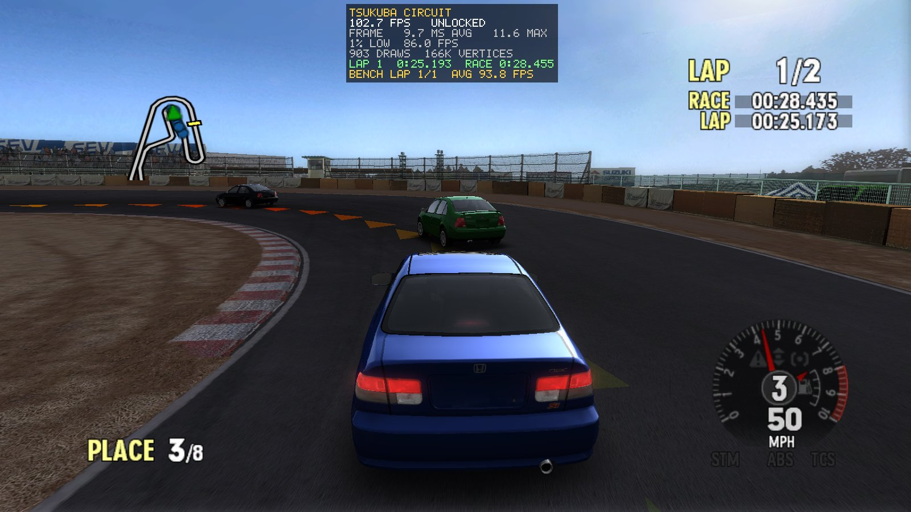
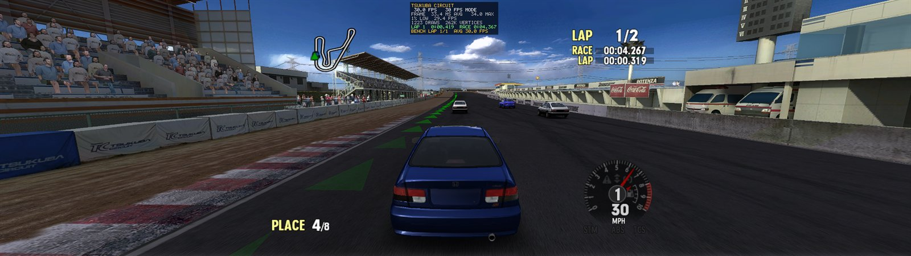
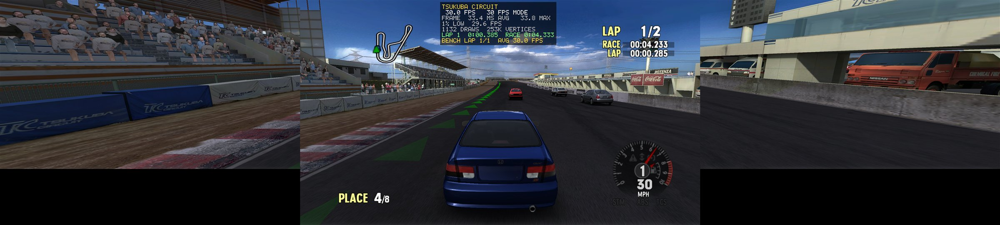

What it is
FM X64 turns the 2005 Xbox game into a native 64-bit Windows program. It is not an emulator running the whole console: the game's own code is converted into C and compiled on your PC by the launcher, and the Xbox's graphics, sound and system calls are replaced with Direct3D 11, XAudio2 and Windows equivalents.
You point the launcher at your game folder or disc image, it prepares the game once, and you press Play.
Features
Native widescreen
16:9 through the game's own widescreen mode, plus 21:9, 32:9 and 48:9 with a wider view instead of a stretched one. Menus and HUD stay in proportion.
Multi-monitor
Span three screens as one continuous view, even with mixed resolutions such as 1080p | 1440p | 1080p. HUD on the middle screen, bezel correction.
High frame rates
The original 30 fps, a 60 fps mode, a custom frame cap, or unlocked. Game speed and physics stay correct at any rate. Optional frame generation doubles the pictures shown.
Higher resolution
Render at up to 6x the original resolution, with AMD FSR 1 or AMD FSR 4 upscaling, and anisotropic texture filtering.
Widescreen menus
An option that fills modern screens in the menus too, while every button and panel stays where the game puts it.
5.1 surround sound
The game's sound system rebuilt on XAudio2 with its reverb, in 5.1 or stereo.
Controllers and keyboard
Xbox controllers through XInput, plus rebindable keyboard controls with steering smoothing.
Benchmark mode
Pick a track and let the game's own AI drive a lap while the frame rate is measured and shown on screen.
Your saves stay local
Career, garage, paint jobs and replays are saved in the launcher's data folder.
Performance depends on your PC's hardware, and your experience may vary. The frame rates mentioned on this site were measured on one test PC; slower CPUs and graphics cards will reach lower frame rates, and some options (such as FSR 4 and frame generation) need specific graphics cards.
Screenshots



Status
Early preview. Every main mode works in testing: Arcade, Free Run, Time Trial and Career, the garage, paint and decals, replays and saves. Split screen, system link and Xbox Live are not supported yet. Performance and stability depend on your hardware and may vary. Read the updates for what changed, report a bug if something goes wrong, and come talk about it and see work in progress on the Discord server.